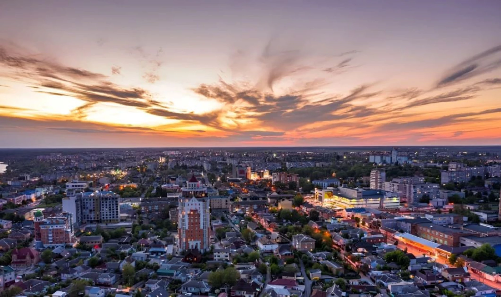

Місце народження: 5 квітня 2007 року, м. Біла Церква
Освіта: КПІ ім. Ігоря Сікорського, м. Київ
Хобі:
Улюблені фільми:
Біла Церква — місто в Україні, найбільший економічний, культурний і освітній центр Київщини, розташований на річці Рось.
Місто засноване у 1032 році київським князем Ярославом Мудрим під назвою Юр'єв.
У 1363 році місто увійшло до складу Великого князівства Литовського, а згодом отримало сучасну назву — Біла Церква.
